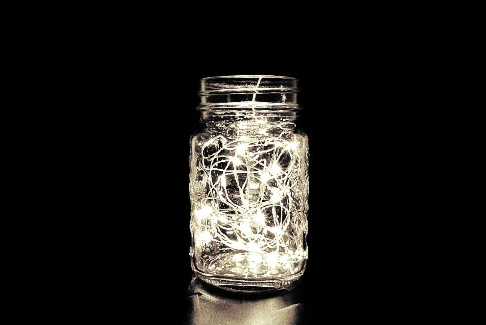

Dia 24 - Diário de bordo
Encontrei algo que acho que nunca mais vou ver um, um tipo de luz em uma jarra, pelos lugares que eu passei, o preço de venda e a procura desse produto era super alto, acho que pode até ser uma das coisas mais requisitadas,
mas não quero vender para aquelas pessoas, não quero voltar lá ou me unir a eles, acho que vou guardar em um local que só eu saiba, na verdade, eu provavelmente vou esquecer, então acho que fazer upload de um mapa aqui seria
de bom agrado, mas antes vou pelo menos registrar isso, não é todo dia que se esbarra com um desses.
-Frank

Nome: A jarra do brilho
Autor: Franklin Murray